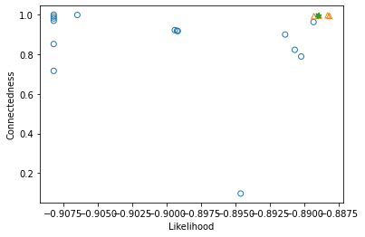
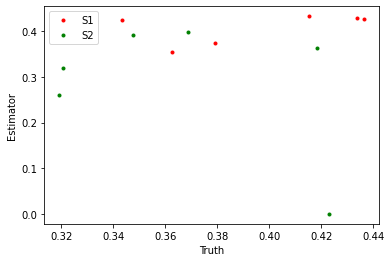
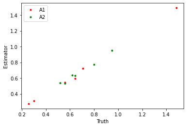
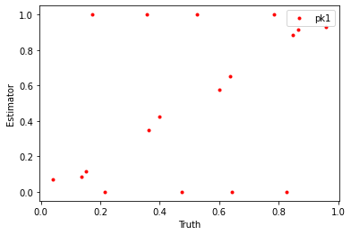

BLM example¶
[1]:
# Add PyTwoWay to system path, do not run this
# import sys
# sys.path.append('../../..')
[2]:
# Import the PyTwoWay package
# (Make sure you have installed it using pip install pytwoway)
import pytwoway as tw
from matplotlib import pyplot as plt
Simulate some data¶
The package contains functions to simulate data. We use this here to keep things simple.
[3]:
# For the example, we simulate data
# Set parameter choices
nl = 2 # Number of worker types
nk = 3 # Number of firm types
fsize = 10 # Max number of employees at a firm
mmult = 100 # Increase observations for movers x100
smult = 100 # Increase observations for stayers x100
blm_true = tw.BLMModel({
'nl': nl, # Number of worker types
'nk': nk, # Number of firm types
'simulation': True # Simulating data
})
sim_data = blm_true._m2_mixt_simulate_sim(fsize=fsize, mmult=mmult, smult=smult)
display(sim_data['jdata'])
display(sim_data['sdata'])
| l | y1 | y2 | g1 | g2 | g1true | g2true | j1 | j2 | |
|---|---|---|---|---|---|---|---|---|---|
| 0 | 0 | -0.204997 | 0.162597 | 0 | 0 | 0 | 0 | F79 | F62 |
| 1 | 0 | 0.596359 | 0.145901 | 0 | 0 | 0 | 0 | F94 | F22 |
| 2 | 0 | 0.241762 | -0.436507 | 0 | 0 | 0 | 0 | F45 | F55 |
| 3 | 0 | -0.267093 | -0.465321 | 0 | 0 | 0 | 0 | F77 | F94 |
| 4 | 0 | -0.433961 | 0.453097 | 0 | 0 | 0 | 0 | F10 | F23 |
| ... | ... | ... | ... | ... | ... | ... | ... | ... | ... |
| 8995 | 1 | 1.442152 | 2.486254 | 2 | 2 | 2 | 2 | F2 | F97 |
| 8996 | 1 | 1.033829 | 1.805655 | 2 | 2 | 2 | 2 | F86 | F88 |
| 8997 | 1 | 1.520521 | 2.104295 | 2 | 2 | 2 | 2 | F92 | F101 |
| 8998 | 1 | 0.531664 | 2.451577 | 2 | 2 | 2 | 2 | F16 | F53 |
| 8999 | 1 | 1.020300 | 1.909180 | 2 | 2 | 2 | 2 | F29 | F11 |
9000 rows × 9 columns
| k | y1 | y2 | g1 | g2 | x | j1 | g1true | j2 | |
|---|---|---|---|---|---|---|---|---|---|
| 0 | 0 | 0.748584 | 0.640799 | 0 | 0 | 1 | F60 | 0 | F60 |
| 1 | 1 | 0.563338 | 1.085478 | 0 | 0 | 1 | F1 | 0 | F1 |
| 2 | 1 | 0.144916 | 1.039482 | 0 | 0 | 1 | F24 | 0 | F24 |
| 3 | 1 | 0.800272 | 0.715033 | 0 | 0 | 1 | F50 | 0 | F50 |
| 4 | 0 | 0.191230 | 0.791316 | 0 | 0 | 1 | F47 | 0 | F47 |
| ... | ... | ... | ... | ... | ... | ... | ... | ... | ... |
| 2995 | 0 | 1.280293 | 0.516505 | 2 | 2 | 1 | F14 | 2 | F14 |
| 2996 | 0 | 0.380551 | 1.293276 | 2 | 2 | 1 | F44 | 2 | F44 |
| 2997 | 0 | 1.653189 | 1.368964 | 2 | 2 | 1 | F4 | 2 | F4 |
| 2998 | 0 | 1.770214 | 1.727462 | 2 | 2 | 1 | F15 | 2 | F15 |
| 2999 | 0 | 1.381628 | 0.977030 | 2 | 2 | 1 | F17 | 2 | F17 |
3000 rows × 9 columns
Initialize and run BLMEstimator¶
[4]:
## Optional Parameters ##
user_blm = {
# Class parameters
'nl': nl, # Number of worker types
'nk': nk, # Number of firm types
'fixb': False, # Set A2 = np.mean(A2, axis=0) + A1 - np.mean(A1, axis=0)
'stationary': False, # Set A1 = A2
# fit() parameters
'n_iters': 100, # Max number of iterations
'threshold': 1e-7, # Threshold to break EM loop
'd_prior': 1.0001, # Value >= 1, account for probabilities being too small
'verbose': 0, # If 0, print no output; if 1, print additional output; if 2, print maximum output
}
# Initialize BLM estimator
blm_fit = tw.BLMEstimator(user_blm)
# Fit BLM estimator
blm_fit.fit(jdata=sim_data['jdata'], sdata=sim_data['sdata'], n_init=20, n_best=5, ncore=4)
100%|██████████| 20/20 [00:07<00:00, 2.67it/s]
Finally, we can investigate the results¶
[5]:
# Plot likelihood vs. connectedness
blm_fit.plot_liks_connectedness()

[6]:
# Plot parameter truth vs. estimates
plt.plot(blm_true.S1.flatten(), blm_fit.model.S1.flatten(), '.', label='S1', color='red')
plt.plot(blm_true.S2.flatten(), blm_fit.model.S2.flatten(), '.', label='S2', color='green')
plt.xlabel('Truth')
plt.ylabel('Estimator')
plt.legend()
plt.show()
plt.plot(blm_true.A1.flatten(), blm_fit.model.A1.flatten(), '.', label='A1', color='red')
plt.plot(blm_true.A2.flatten(), blm_fit.model.A2.flatten(), '.', label='A2', color='green')
plt.xlabel('Truth')
plt.ylabel('Estimator')
plt.legend()
plt.show()
plt.plot(blm_true.pk1.flatten(), blm_fit.model.pk1.flatten(), '.', label='pk1', color='red')
plt.xlabel('Truth')
plt.ylabel('Estimator')
plt.legend()
plt.show()


